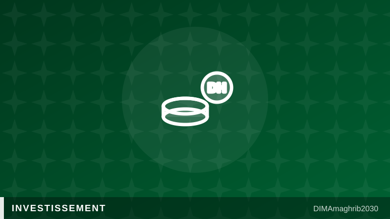

42 milliards de dirhams, 29 projets : l'investissement passe la vitesse supérieure au Maroc42 Billion Dirhams, 29 Projects: Morocco's Investment Machine Shifts Into High Gear

La machine à investir marocaine ne prend pas de vacances. Début juillet, la 11e Commission nationale des investissements a approuvé 29 conventions représentant près de 42 milliards de dirhams, soit environ 3,9 milliards d'euros, rapporte l'agence APA. À la clé : près de 9 800 emplois attendus, dont 2 400 directs et 7 400 indirects, répartis sur des projets industriels, énergétiques et touristiques à travers le royaume.
La Charte de l'investissement tient ses promesses
Ce nouveau train de projets porte le bilan de la Charte de l'investissement, entrée en vigueur il y a trois ans, à 391 conventions signées pour un total de 520 milliards de dirhams. Un rythme soutenu qui traduit une stratégie assumée : faire de l'investissement privé, marocain comme étranger, le premier moteur de la création d'emplois, avec un objectif affiché de deux tiers d'investissement privé dans l'économie d'ici 2035.
Cette dynamique interne s'appuie sur un contexte mondial favorable au royaume. Selon le World Investment Report 2026 de la CNUCED, les flux d'investissements directs étrangers vers le Maroc ont bondi de 91 % en 2025 pour atteindre 3,33 milliards de dollars, portés par l'automobile, les batteries et les industries exportatrices.
Paris, vitrine de l'attractivité marocaine
La diplomatie économique suit le même tempo. Début juillet, la Journée économique France-Maroc organisée à Paris a réuni décideurs et chefs d'entreprise des deux rives pour promouvoir les opportunités d'affaires, rapporte le portail officiel Maroc.ma. Automobile, énergies renouvelables, agro-industrie, tourisme : les secteurs présentés aux investisseurs français recoupent précisément ceux que la Commission nationale vient de doter de nouveaux projets.
Transformer l'essai d'ici 2030
Reste l'exécution. Entre une convention signée et une usine qui tourne, il y a des délais d'autorisation, du foncier à mobiliser et des compétences à former. C'est là que se jouera la crédibilité du dispositif : les 9 800 emplois promis par cette 11e commission devront être visibles sur le terrain bien avant la Coupe du Monde 2030, horizon que le royaume s'est fixé pour changer d'échelle économique. Investir au Maroc n'a jamais semblé aussi attractif sur le papier ; les prochains trimestres diront si le terrain suit le rythme des signatures.
Morocco's investment machine is not taking a summer break. In early July, the country's 11th National Investment Commission approved 29 agreements worth nearly 42 billion dirhams — around $4.2 billion — according to the African Press Agency. The expected payoff: close to 9,800 jobs, including 2,400 direct and 7,400 indirect positions, spread across industrial, energy and tourism projects throughout the kingdom.
The Investment Charter is delivering
This latest batch brings the running total under the Investment Charter, in force for three years now, to 391 signed agreements worth 520 billion dirhams. The sustained pace reflects a deliberate strategy: making private investment, Moroccan and foreign alike, the main engine of job creation, with a stated goal of two-thirds private investment in the economy by 2035.
The domestic momentum rests on a global backdrop that favors the kingdom. According to UNCTAD's World Investment Report 2026, foreign direct investment flows into Morocco jumped 91% in 2025 to reach $3.33 billion, driven by the automotive sector, batteries and export-oriented industries.
Paris as a showcase
Economic diplomacy is keeping the same tempo. In early July, the France-Morocco Economic Day held in Paris brought together decision-makers and business leaders from both countries to promote investment opportunities, reports the official portal Maroc.ma. Automotive, renewable energy, agro-industry, tourism: the sectors pitched to French investors are precisely the ones the National Investment Commission has just stocked with new projects.
Converting signatures into factories by 2030
Execution is the remaining test. Between a signed agreement and a running factory lie permitting delays, land to mobilize and skills to train. That is where the system's credibility will be decided: the 9,800 jobs promised by this 11th commission will need to be visible on the ground well before the 2030 World Cup, the horizon the kingdom has set itself for an economic change of scale. Investing in Morocco has never looked this attractive on paper; the coming quarters will show whether delivery can keep pace with the signing ceremonies.